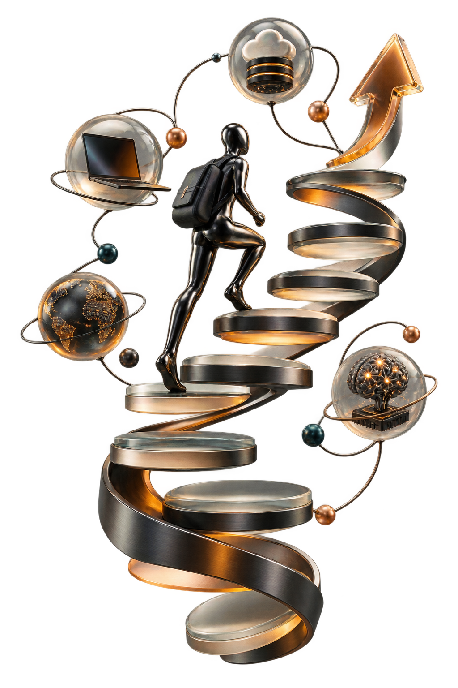

Разработка сайтов
Лендинги и многостраничные сайты: структура, дизайн, адаптивная вёрстка, подключение форм и базовая оптимизация.
Digital · AI · Growth
Создаю сайты, Telegram-ботов и AI-инструменты, которые упрощают процессы, экономят время и помогают бизнесу расти.

Что я делаю
Сначала разбираюсь в продукте и процессе клиента, затем предлагаю решение с понятной логикой, сроками и ожидаемым результатом.
Лендинги и многостраничные сайты: структура, дизайн, адаптивная вёрстка, подключение форм и базовая оптимизация.
Автоматизация заявок, оплат, ответов и внутренних процессов с понятным сценарием для клиента и команды.
Внедрение нейросетей в рутинные операции: общение, подготовку материалов, аналитику и обработку запросов.
Стратегия, рубрики, тексты и визуальная подача, которые помогают превращать внимание аудитории в обращения.
Настройка и сопровождение кампаний в Яндекс Директе и Telegram с фокусом на целевое действие и окупаемость.
Индивидуальная программа по применению нейросетей в работе, бизнесе и повседневных задачах.
Результаты
Цифры зависят от проекта и не являются гарантией будущего результата, но показывают масштаб уже выполненных задач.
Обо мне
Соединяю разработку, продвижение и автоматизацию, чтобы отвечать не только за отдельный инструмент, но и за итоговую пользу.
Разработал систему, которая помогла увеличить поток клиентов на 38% за первые два месяца. Дополнительно подключил Telegram-бота с автоматизированным приёмом оплаты.
Получил более миллиона просмотров за первые три месяца и более четырёх миллионов за 14 месяцев благодаря системной работе с контентом.
Ищу рекламодателей, веду переговоры и сопровождаю интеграции. Выстраиваю путь от первого контакта до понятного результата.
Если запрос выходит за рамки одного инструмента, изучаю процесс целиком, нахожу рабочий подход и довожу реализацию до завершения.
Процесс
Каждый этап имеет конкретный результат — вы понимаете, что происходит с проектом и зачем.
Цели, аудитория, ограничения и критерии успеха.
Структура, сценарии и технический план.
Дизайн, код, интеграции и контент.
Телефоны, браузеры, скорость и ошибки.
Публикация, домен, аналитика и контроль.
Измерение результата и улучшения.
Отзывы
Несколько отзывов о разработке, продвижении и автоматизации.
«Контент стал интереснее, выросло число подписчиков и активность. Очень ответственный подход».
«Реклама привела именно ту аудиторию, о которой я просила. Всё сделано быстро и по делу».
«Бот работает круглосуточно: учтены пожелания, подключена оплата и настроены автоответы».
Контакты
Опишите задачу. Я изучу запрос и свяжусь с вами удобным способом.